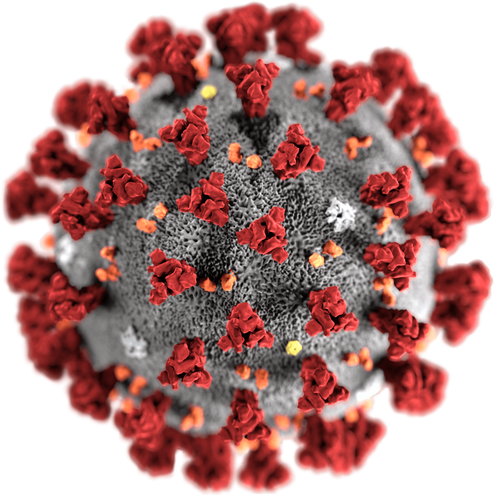
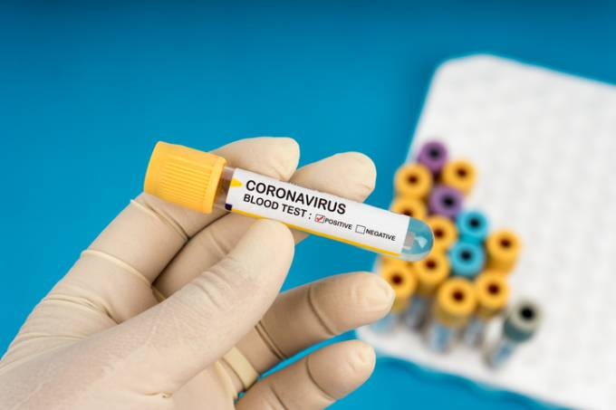
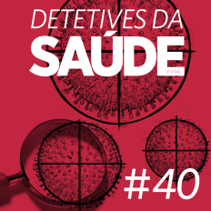

Notícias Covid-19
Home
Sobre
Contato
Saiba mais
Notícias em Destaque
Como a ciência prova que o coronavírus
não foi criado em um laboratório

São Paulo deve iniciar testagem
em massa para covid-19 em maio

Podcast O contra-ataque ao coronavírus
Seu navegador não possui suporte ao elemento audio.
Podcast Como nasce uma pandemia
Seu navegador não possui suporte ao elemento audio.